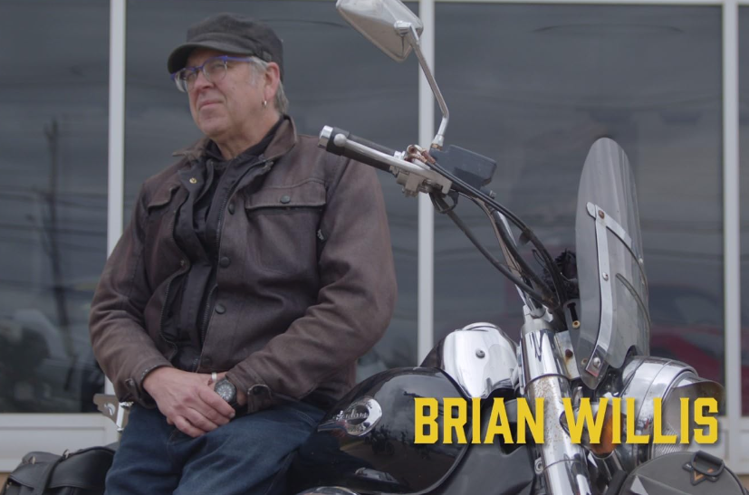

Hi! I'm Elisha, a seasoned multimedia production, marketing strategy,
and stage management professional, based in Charlottetown. My career
spans the dynamic worlds of film, live news broadcasts, television and
digital series, and exhilarating live events spanning the globe—from
the vibrant landscapes of the Caribbean to the bustling cities of the
United Kingdom, Latin America, and North America.
With my rich multicultural background, I bring a diverse perspective
and extensive expertise to every project I undertake. Whether I'm
crafting compelling campaigns or ensuring seamless live events are
executed without a hitch, my unwavering dedication to excellence
shines through in my work.
Interested in working with me on your next project? Contact me today.
Portfolio
Are you looking for a Producer or a Production Manager? Here’s some
examples of my work.

Name: My Best Ride
Type: TV Series
Role: Production Manager
Platform: Fibe TV1
Year: 2022
On ‘My Best Ride’, host Brian Sharp meets up with motorcyclists
who take him on completely different riding experiences through
Prince Edward Island's exhilarating terrain.

Name: T is for Té
Type: Web Series
Roles: Director, Producer, Show Developer
Platforms: Youtube, Instagram
Year: 2022
'T is for Té is a four-episode web series that launched in
February 2022 to celebrate Black History Month.

Name: RomeIN Carnival
Type: Web Series
Roles: Producer
Platforms: YouTube, Facebook, Digicel App
Year: 2021
‘RomeIN Carnival’ is a four-episode web series hosted and
conceptualized by Rome. This annual series celebrates Trinidad
and Tobago's vibrant Carnival culture and the people who bring
it to life.
Are you looking for a Stage Manager or Live Event Producer? Here are
some of the events I’ve worked on.
Black History Month 2024 Opening Gala | 2024
This elegant gala event showcased local performing artists
and included a three-course meal. For this project, my
responsibilities included:
-
Managing the sound check for the performers, MC, and DJ to
ensure optimal audio quality
-
Coordinating the schedule during the event meticulously,
ensuring the agenda proceeded smoothly and punctually
PFW Fashion Show PEI's inaugural Fashion Weekend which ran
from March 25 and 26 was created by Julia Campbell, co-owner
of Jems Boutique, and Bianca Garcia, social media lead and
senior sales associate. I joined the duo in March 2022 to
produce the runway show which featured local designers,
retailers, and performers. This was an exciting event with
several moving parts. A combination of 10 designers and
retailers' clothing was showcased on the runway by 28
models. There were six performers. I produced the runway
show in 2023 as well. PEI's inaugural Fashion Weekend, held
on March 25 and 26, was created by Julia Campbell, co-owner
of Jems Boutique, and Bianca Garcia, social media lead and
senior sales associate. I joined the duo in March 2022 to
produce the runway show, featuring local designers,
retailers, and performers. This vibrant event had several
moving parts, showcasing the clothing of 10 designers and
retailers on the runway, modeled by 28 models, and featuring
six performers. The event was a dynamic display of local
talent and creativity. I also had the privilege of producing
the runway show in 2023, continuing to highlight the best of
PEI's fashion scene. For this project, some of my tasks
included:
- Contract preparation and distribution
- Scriptwriting
-
Coordination of all of the show's participants (except
performers)
- Creating and managing the show rundown
- Managing backstage production assistants
- Putting out any fires aka problem solving
PFW Fashion Show PEI's inaugural Fashion Weekend which ran
from March 25 and 26 was created by Julia Campbell, co-owner
of Jems Boutique, and Bianca Garcia, social media lead and
senior sales associate. I joined the duo in March 2022 to
produce the runway show which featured local designers,
retailers, and performers. This was an exciting event with
several moving parts. A combination of 10 designers and
retailers' clothing was showcased on the runway by 28
models. There were six performers. I produced the runway
show in 2023 as well. PEI's inaugural Fashion Weekend, held
on March 25 and 26, was created by Julia Campbell, co-owner
of Jems Boutique, and Bianca Garcia, social media lead and
senior sales associate. I joined the duo in March 2022 to
produce the runway show, featuring local designers,
retailers, and performers. This vibrant event had several
moving parts, showcasing the clothing of 10 designers and
retailers on the runway, modeled by 28 models, and featuring
six performers. The event was a dynamic display of local
talent and creativity. I also had the privilege of producing
the runway show in 2023, continuing to highlight the best of
PEI's fashion scene. For this project, some of my tasks
included:
- Contract preparation and distribution
- Scriptwriting
-
Coordination of all of the show's participants (except
performers)
- Creating and managing the show rundown
- Managing backstage production assistants
- Putting out any fires aka problem solving
Are you looking for assistance with your marketing strategy or campaign?
As the Marketing Manager at WorkSource Alliance, I lead the development and execution of comprehensive
marketing strategies. My role involves creating impactful marketing campaigns, managing social media presence,
and producing engaging video content to amplify our mission and connect with our audience.
Key Responsibilities:
- Marketing Strategy: Developing and implementing marketing strategies to enhance brand visibility and
engagement.
- Social Media Management: Oversee social media content creation, scheduling, and community engagement across
platforms.
- Video Production: Record and edit videos for social media, capturing the essence of our initiatives and
events.
Achievements:
-
Successfully increased social media engagement by [X]% within [timeframe].
- Boosted follower growth by [X]% on Instagram through targeted content strategies.
- Produced a series of impactful videos that garnered over 4,000 views and [Y] shares.
Explore my work on ASDA’s Instagram page.
Get In Touch
Have a question or just want to say hello? Reach out to me! I am here to help and would love to hear from you.
Fill out the form below, and I will get back to you as soon as I can.